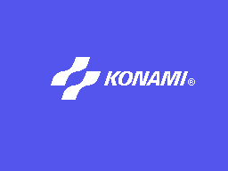
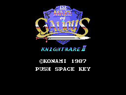
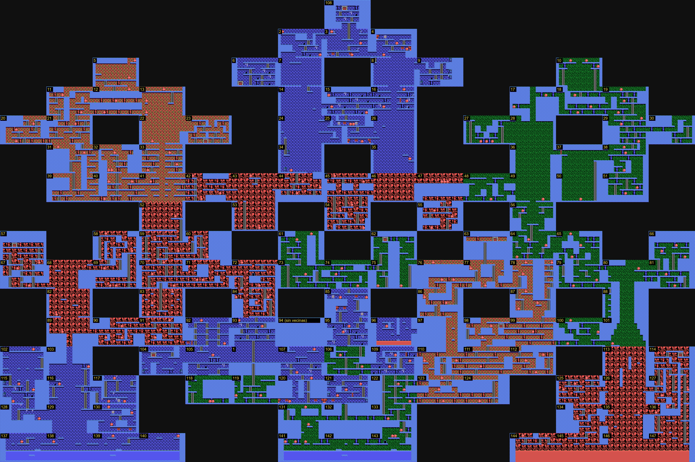
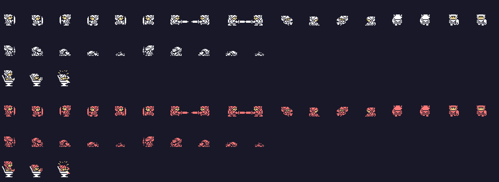
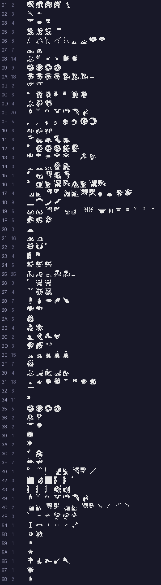
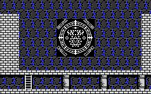
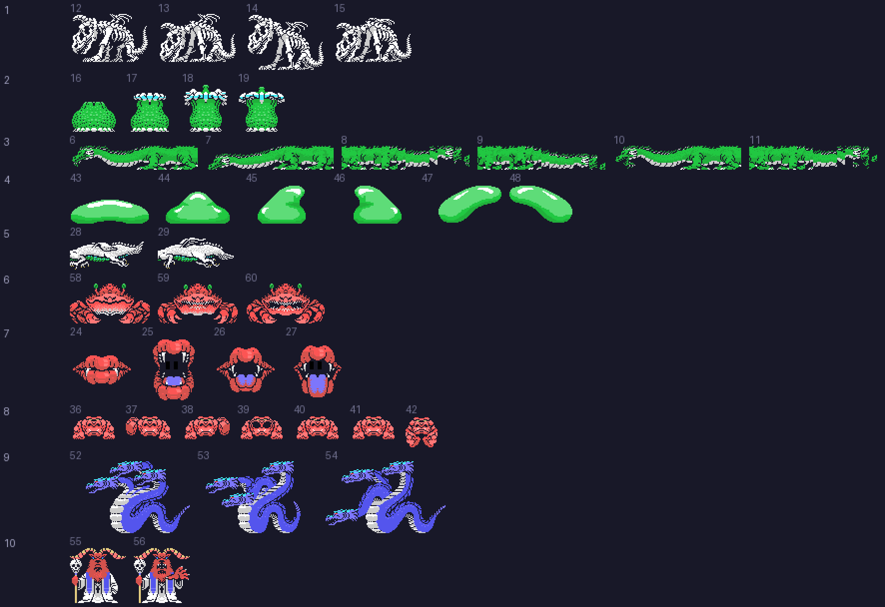
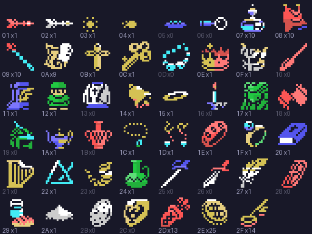

Popolon y Afrodita recorren el castillo y diez mundos: 321 salas. El castillo tiene 147; los mundos, de 15 a 27, y el décimo, el de GALIOUS, 6. En esta web el mapa 1 es el castillo y los mapas 2 a 11 son los mundos 1 a 10.
Todas las imágenes de esta página están dibujadas desde los bytes de la ROM con las herramientas de tools/, que siguen los pasos del propio cartucho, y cotejadas contra volcados de openMSX (C-BIOS_MSX1_JP). Debajo de cada una se dice de qué tabla sale.

El logotipo: 6 filas de 21 caracteres desde el 0x40 (p01:6957), con los dibujos de 0xBCEF del banco 9. Sale de arriba abajo, una línea de cada fila cada dos cuadros (p01:6985), sobre el azul del registro 7 (0xE4).

El rótulo de 0x933F (14 × 12 caracteres), las letras de la lista 0x7D51 y cuatro sprites de 0x93E7. Un destello baja por la espada y se apaga (p01:6267).
Los dos coinciden con openMSX en los 16 KB de la VRAM (titulo.py coteja).

Las 147 salas del castillo, cada una con su número, colocadas por sus vecinas (tabla 0xA9EF del banco 9). Cada sala son 8 × 5 bloques de 4 × 4 caracteres.
El orden de las vecinas (arriba, abajo, izquierda, derecha) está comprobado en openMSX: saliendo por la izquierda y por la derecha se llega a la sala que dice la tabla, y las cuatro que el juego carga en 0xE648 son las de la tabla; arriba y abajo los usa p03:A7F8. Las salas se numeran en orden de lectura salvo las de la entrada. La 94 no tiene vecinas: va en el único hueco que queda entre la 93 y la 95, y cómo se llega a ella está en Preguntas abiertas.
Encima de la planta, el juego monta escaleras, puertas de los mundos y de vuelta, objetos y bolas rosas. Las 321 salas, con todo eso, coinciden con openMSX carácter a carácter.
| Mundo | Salas | El nombre del jefe |
|---|---|---|
| 1 | 15 | YOMAR |
| 2 | 15 | ELOHIM |
| 3 | 16 | HAHAKLA |
| 4 | 17 | BARECHET |
| 5 | 18 | HEOTYMEO |
| 6 | 19 | LEPHA |
| 7 | 20 | NAWABRA |
| 8 | 21 | ASCHER |
| 9 | 27 | XYWOLEH |
| 10 | 6 | HAMALECH |
Cada número lleva a su mapa. Los nombres salen de la tabla 0x9B4F del banco 2, tres bytes por mapa: dónde está el texto y cuántas letras tiene.
Las salas en negro de los mapas son las de las pistas y las tiendas: el juego no las monta como las demás (ver Hallazgos).

Las 32 poses del jugador (tabla 0x7529 del banco 1), arriba Popolon y abajo Afrodita. De la 18 a la 27 se hunde (p00:5832). Cotejadas con openMSX en 2748 situaciones de partida.
Los dos usan los mismos dibujos; Afrodita lleva el color 9 donde Popolon lleva el 15.

Los juegos de sprites que carga cada sala (base 0x790D y tablas 0x9737 y 0x7C72), en blanco: el color lo pone cada figura al salir.
Los dibujos van por sala y no por enemigo: cada sala carga su juego y sus figuras lo comparten. Los de las 321 salas coinciden con openMSX.

La sala del jefe del mundo 1 antes de que salga: el sello es el recuadro de 8 × 8 caracteres de 0x9BE2. Su mitad izquierda son los dibujos de 0xB760 (30 caracteres desde el 0x5A, ficha p10:6121) y la derecha, los mismos caracteres dados la vuelta (copias de p10:6128). Lo carga p00:56FA mientras el jefe no ha salido.
El jefe no aparece solo: en su sala hay que teclear su nombre (p02:9B18 compara las últimas letras tecleadas). Entonces sale un humo y después el jefe, con el fondo de la sala en negro.

Los diez jefes enteros, con el número de su mundo. No son sprites: son mosaicos de caracteres (61 en la tabla 0x9E0A del banco 14) que se cambian para moverlos. Sus gráficos los carga p00:5856; el del mundo 3, por pasos, un trozo cada cuadro.
Qué mosaicos usa cada jefe se midió en partida, cuadro a cuadro, durante 6000 cuadros; los 18 que se ven enteros coinciden con openMSX.

Los 47 tipos de objeto (1 a 0x2F), cada uno con su número y cuántos hay en las salas. Los de 7 a 0x2C tienen dibujo propio (0x6E34 y 0x6E80 del banco 10); los últimos tres son flechas, monedas y llaves.
El juego no los nombra en ningún sitio: solo los dibuja. Por eso aquí van por número. Lo que hace cada uno sale de quién mira su marca (0xE06F más el tipo); algunos:
Los demás, con su dirección, en tools/objetos.py.
Hay 13 fichas de tienda (0x9255 del banco 2), de hasta tres artículos cada una, con el precio en monedas:
| Lo que se vende | Precio |
|---|---|
| 100 flechas (0x2D) | 20 |
| una llave (0x2F) | 5 |
| 0x05, 0x06 | 30, 20 |
| 0x0D, 0x23 | 25 |
| 0x10, 0x18, 0x21, 0x28 | 30 |
| 0x2B | 40 |
| 0x19, 0x2C | 50 |
La tienda de la pluma (0x10, ficha 12), en la sala 18 del mundo 5, está comprobada en openMSX.